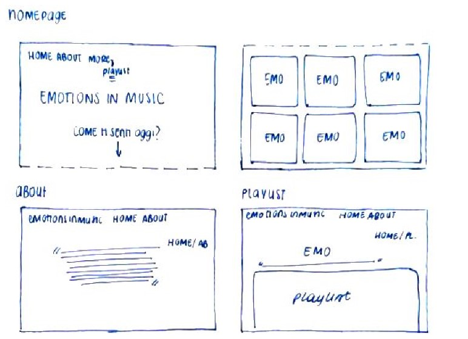
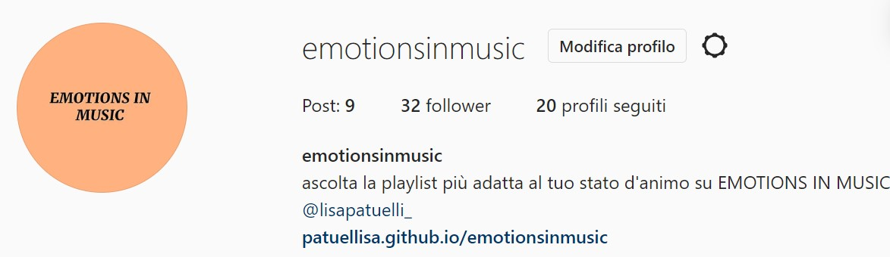
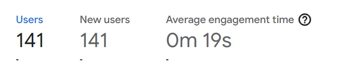
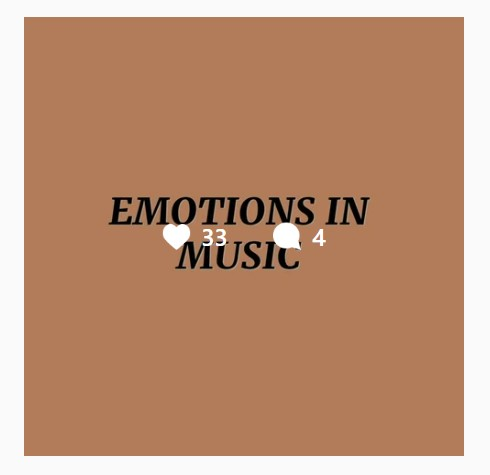

ABSTRACT
Il sito "emotions in music" ha lo scopo di proporre una playlist in base all'umore dell'utente. La musica è per tutti, ecco perché chiunque può accedere al sito e dedicarsi un momento di ascolto e riflessione al quale partecipa anche la musica come indispensabile accompagnatrice. Il sito propone svariate emozioni in modo da permettere a ogni utente il servizio migliore. Le emozioni trovano spazio in playlist dedicate composte da canzoni che parlano di quella determinata emozione, in modo che l'utente possa ritrovarsi nelle parole di qualcuno e pienamente accettare il suo stato d'animo
PROJECT MANAGEMENT PLAN
BENCHMARKING
OBIETTIVI
Il sito ha lo scopo di proporre una playlist in base allo stato d'animo selezionato dall'utente. Le canzoni che compongono ogni playlist sono filtrate in base al testo.
ANALISI DI MERCATO
Il sito è pensato per un target giovane, in età adolescenziale. Il target è suggerito dall'estetica del sito e dall'obiettivo di offrire un momento per sè stessi accompagnato dalla musica; utile soprattutto a coloro che stanno passando il periodo stravolgente dell'adolescenza in cui è importante imparare ad ascoltarsi.
Per quanto riguarda i competitors salta subito alla mente Spotify - o un suo simile - che propone playlist intitolate con stati d'animo tra tantissime playlist ideate per accompagnare qualsiasi momento (viaggi in auto, sotto la doccia, pulizie). Ci sono anche tanti siti web simili al mio e a Spotify che propongono una scelta molto limitata di stati d'animo che si sviluppano in scalette filtrate in base alla melodia (es: https://www.moodplayl.ist/).
STRUTTURA E LAYOUT
ARCHITETTURA
WIREFRAME

LOOK AND FEEL
Il sito presenta una palette di colori tenui sul color albicocca. Le scritte principali sono in nero così da creare contrasto e risaltare, mentre le pagine dedicate alle playlist hanno dei colori dedicati che corrispondono e suggeriscono l'emozione che rappresentano.
LINGUAGGI E STRUMENTI
LINGUAGGIO WEB
HTML, CSS
STRUMENTI DI SUPPORTO
Bootstrap per alcune grafiche,
Google font per scritte e icone,
Spotify for Developer per incorporare le playlist
Google analytics per le statistiche,
Github per la pubblicazione.
COMUNICATION STRATEGY
BACKGROUND
Quasi tutti i siti esistenti di streaming musicale fanno la stessa cosa: propongono brani e playlist (caricati dai rispettivi creator) che tutti possono ascoltare. Il risultato è bene o male sempre soddisfacente dato che l'utente può scegliere cosa ascoltare tra una varietà di contenuti molto ampia. Inoltre, se si utilizzano con frequenza, questi siti arrivano a proporre all'utente dei mix musicali in cui si trovano canzoni che l'utente già ascolta e canzoni nuove da scoprire, proposte in base a quelle già salvate (es. daily mix di Spotify). Quello che manca invece è l'attenzione allo stato d'animo dell'utente in primo luogo, e poi anche ai testi delle canzoni. Esistono siti che propongono playlist composte da canzoni con lo stesso mood melodico e che hanno lo scopo di accompagnare momenti precisi delle giornate degli utenti, ma è innovativo invece che il filtro sia il testo e l'obiettivo proposto sia soprattutto di riflessione.
OBIETTIVI COMUNICATIVI
Il sito ha lo scopo di aiutare le persone ad accettare qualsiasi stato d'animo e, soprattutto, a goderselo. Per raggiungerlo si pensa a una promozione online tramite i social network.
TARGET AUDIENCE
Il sito è rivolto soprattutto ai ragazzi in età adolescenziale e che forse, più di tutti, hanno bisogno di dedicarsi dei momenti di ascolto e riflessione. Comunque, la musica è universale e chiunque può trovarvi conforto. Le canzoni proposte sono di tutti i generi e generazioni, proprio perchè i giovani possano ritrovarsi nelle parole dei più grandi.
Un target giovane è facilmente raggiungibile tramite i social network, per questo saranno usati instragram in tutte le sue funzioni e un passaparola tramite whatsapp.
PROMOZIONE
La promozione del sito si sviluppa esclusivamente online tramite una pagina instagram dedicata, che mira a raggiungere un centinaio di visualizzazioni e una trentina di like al post principale.
Per quanto riguarda le visite al sito, se ne prevedono una cinquantina.


